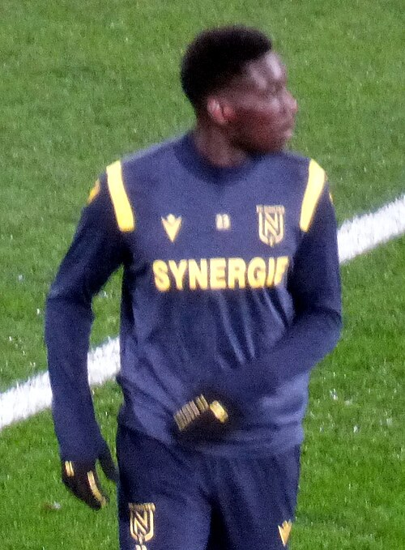
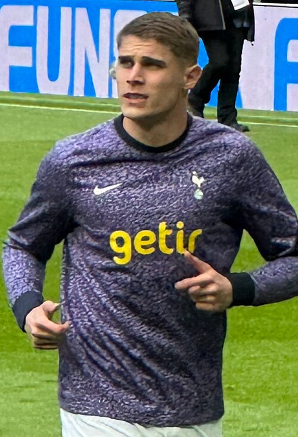
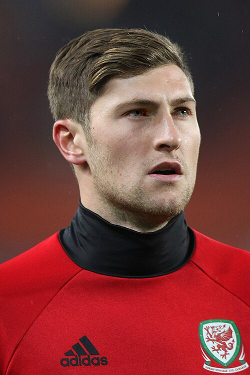
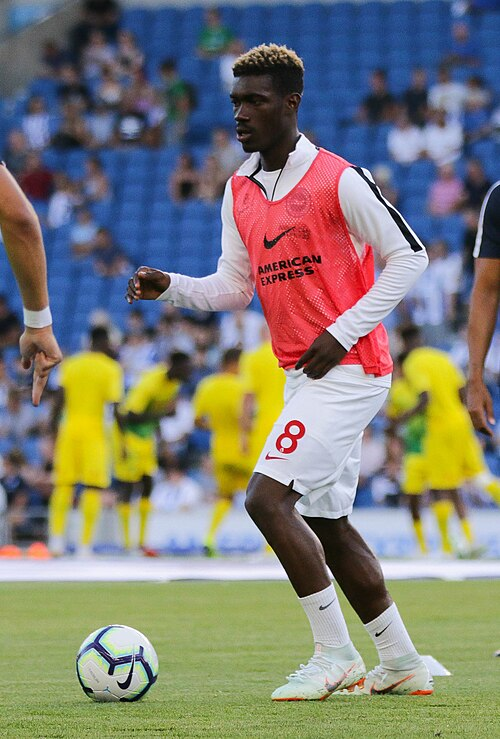
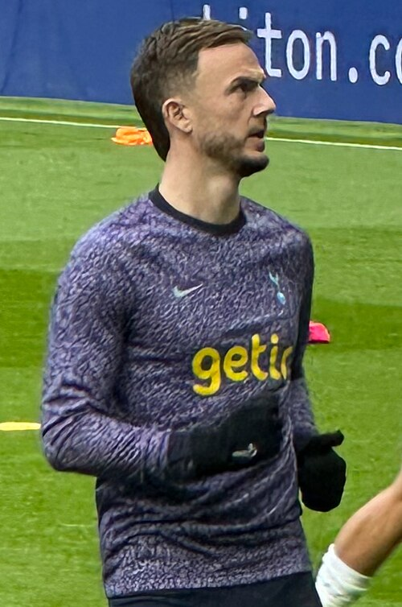

Tottenham Hotspur F.C. Portfolio
Current roster, squad value, top assets, U23 assets, honours, and market risk.
Squad Market Score85.1
Squad ARES Score83.8
Average Age25.6
Transfer RiskLow

Tottenham Hotspur F.C.
Premier League | England | Europe
Top AssetMohammed Kudus
U23 Assets9
Honours Rows18
ConfidenceHigh
Roster source: Tottenham Hotspur F.C. | Checked 2026-05-24
Market Score vs Age
Squad portfolio shape by age and market score.
X-axis: Player ageY-axis: Market Score
ARESMarketTrendConfidence
How to read: Each point shows how squad age relates to market value.
Position Strength
GK, CB, FB, CM, W, CF portfolio balance.
X-axis: Position groupY-axis: Squad strength
ARESMarketTrendConfidence
How to read: Bars compare strength across the main football position groups.
Current Player Roster
| Player | Age | Position | Minutes / Role | ARES | Market | Tier | Trend | Confidence |
|---|---|---|---|---|---|---|---|---|
 Mohammed Kudus Mohammed Kudus | 25 | FW | 1614 estimated minutes / Rotation / role player | 92.6 | 95.4 | Franchise Asset | Flat | High |
| Richarlison | 29 | FW | 1539 estimated minutes / Rotation / role player | 92.7 | 94.0 | Franchise Asset | Falling | High |
| Mathys Tel | 21 | FW | 2054 estimated minutes / Projected starter | 91.3 | 93.6 | Franchise Asset | Falling | High |
| Xavi Simons | 23 | MF | 2138 estimated minutes / Projected starter | 92.9 | 93.4 | Franchise Asset | Flat | High |
| Dominic Solanke | 28 | FW | 1067 estimated minutes / Rotation / role player | 90.2 | 92.7 | Franchise Asset | Flat | High |
 Randal Kolo Muani | 27 | FW | 1605 estimated minutes / Rotation / role player | 89.5 | 91.9 | Franchise Asset | Falling | High |
| Wilson Odobert | 21 | FW | 2505 estimated minutes / Projected starter | 88.8 | 90.8 | Franchise Asset | Rising | High |
 Micky van de Ven | 25 | DF | 2597 estimated minutes / Projected starter | 90.9 | 90.1 | Franchise Asset | Rising | High |
| Cristian Romero | 28 | DF | 1194 estimated minutes / Rotation / role player | 89.7 | 88.8 | Franchise Asset | Rising | High |
| RBMFTottenham Hotspur F.C.Rodrigo Bentancur | 24 | MF | 1225 estimated minutes / current squad | 78.0 | 88.0 | Core Starter | Stable | Medium |
| AKGKTottenham Hotspur F.C.Antonín Kinský | 32 | GK | 1186 estimated minutes / current squad | 70.1 | 87.8 | Core Starter | Stable | Medium |
| Conor Gallagher | 26 | MF | 2857 estimated minutes / Projected starter | 87.6 | 87.7 | Blue-Chip Asset | Rising | High |
 Ben Davies | 33 | DF | 1495 estimated minutes / Rotation / role player | 91.2 | 86.9 | Blue-Chip Asset | Flat | High |
| Pedro Porrero | 26 | W | 2820 estimated minutes / Projected starter | 85.3 | 86.6 | Blue-Chip Asset | Flat | High |
| João Palhinha | 30 | MF | 786 estimated minutes / Rotation / role player | 87.2 | 85.7 | Blue-Chip Asset | Falling | High |
 Yves Bissouma | 29 | MF | 1614 estimated minutes / Rotation / role player | 86.5 | 84.9 | Blue-Chip Asset | Flat | High |
| Dávinson Sánchez | 29 | DF | 1955 estimated minutes / Projected starter | 87.4 | 84.6 | Blue-Chip Asset | Flat | High |
| Destiny Udogie | 23 | DF | 2608 estimated minutes / Projected starter | 86.2 | 84.5 | Blue-Chip Asset | Falling | High |
 James Maddison | 29 | MF | 2435 estimated minutes / Projected starter | 85.3 | 83.5 | Blue-Chip Asset | Rising | High |
| Radu Drăgușin | 24 | DF | 714 estimated minutes / Rotation / role player | 85.0 | 83.5 | Blue-Chip Asset | Rising | High |
| SDFTottenham Hotspur F.C.Souza | 23 | DF | 1821 estimated minutes / current squad | 75.9 | 80.8 | Rising Asset | Stable | Medium |
| PMSMFTottenham Hotspur F.C.Pape Matar Sarr | 26 | MF | 2465 estimated minutes / current squad | 69.0 | 80.1 | Core Starter | Stable | Medium |
| DKFWTottenham Hotspur F.C.Dejan Kulusevski | 20 | FW | 2033 estimated minutes / current squad | 72.2 | 79.5 | Rising Asset | Stable | Medium |
| PPDFTottenham Hotspur F.C.Pedro Porro | 23 | DF | 3040 estimated minutes / current squad | 77.0 | 73.2 | Rising Asset | Rising | Medium |
| BAGKTottenham Hotspur F.C.Brandon Austin | 22 | GK | 2278 estimated minutes / current squad | 68.4 | 71.3 | Rising Asset | Stable | Medium |
| PSFWTottenham Hotspur F.C.Paris Saint-Germain | 20 | FW | 1778 estimated minutes / current squad | 69.0 | 70.1 | Rising Asset | Stable | Medium |
| DSDFTottenham Hotspur F.C.Djed Spence | 24 | DF | 2804 estimated minutes / current squad | 83.5 | 69.5 | Core Starter | Rising | Medium |
U23 Assets
| Player | Age | Position | Market | Reason |
|---|---|---|---|---|
| Mathys Tel | 21 | FW | 93.6 | Upside FW profile with Premier League context, 2054 beta-estimated minutes, and licensed Commons photo coverage. |
| Xavi Simons | 23 | MF | 93.4 | Upside MF profile with Premier League context, 2138 beta-estimated minutes, and licensed Commons photo coverage. |
| Wilson Odobert | 21 | FW | 90.8 | Upside FW profile with Premier League context, 2505 beta-estimated minutes, and licensed Commons photo coverage. |
| Destiny Udogie | 23 | DF | 84.5 | Upside DF profile with Premier League context, 2608 beta-estimated minutes, and licensed Commons photo coverage. |
| SDFTottenham Hotspur F.C.Souza | 23 | DF | 80.8 | Current club roster row parsed from Wikipedia. |
| DKFWTottenham Hotspur F.C.Dejan Kulusevski | 20 | FW | 79.5 | Current club roster row parsed from Wikipedia. |
| PPDFTottenham Hotspur F.C.Pedro Porro | 23 | DF | 73.2 | Current club roster row parsed from Wikipedia. |
| BAGKTottenham Hotspur F.C.Brandon Austin | 22 | GK | 71.3 | Current club roster row parsed from Wikipedia. |
| PSFWTottenham Hotspur F.C.Paris Saint-Germain | 20 | FW | 70.1 | Current club roster row parsed from Wikipedia. |
Club Honours And Trophies
| Competition | Type | Count | Years | Source |
|---|---|---|---|---|
| First Division (Tier 1) Winners (2) | Team honour | 2 | 1950, 1960 | https://en.wikipedia.org/wiki/Tottenham_Hotspur_F.C. |
| Winners (2) | Team honour | 2 | 1950, 1960 | https://en.wikipedia.org/wiki/Tottenham_Hotspur_F.C. |
| Second Division (Tier 2) Winners (2) | Team honour | 2 | 1919, 1949 | https://en.wikipedia.org/wiki/Tottenham_Hotspur_F.C. |
| Winners (2) | Team honour | 2 | 1919, 1949 | https://en.wikipedia.org/wiki/Tottenham_Hotspur_F.C. |
| FA Cup Winners (8) | Team honour | 8 | 1900, 1920, 1960, 1961, 1966, 1980, 1981, 1990 | https://en.wikipedia.org/wiki/Tottenham_Hotspur_F.C. |
| Winners (8) | Team honour | 8 | 1900, 1920, 1960, 1961, 1966, 1980, 1981, 1990 | https://en.wikipedia.org/wiki/Tottenham_Hotspur_F.C. |
| League Cup Winners (4) | Team honour | 4 | 1970, 1972, 1998, 2007 | https://en.wikipedia.org/wiki/Tottenham_Hotspur_F.C. |
| Winners (4) | Team honour | 4 | 1970, 1972, 1998, 2007 | https://en.wikipedia.org/wiki/Tottenham_Hotspur_F.C. |
| FA Charity Shield / FA Community Shield Winners (7) | Team honour | 7 | 1921, 1951, 1961, 1962, 1967, 1981, 1991 | https://en.wikipedia.org/wiki/Tottenham_Hotspur_F.C. |
| Winners (7) | Team honour | 7 | 1921, 1951, 1961, 1962, 1967, 1981, 1991 | https://en.wikipedia.org/wiki/Tottenham_Hotspur_F.C. |
| Sheriff of London Charity Shield Winners (1) | Team honour | 1 | 1902 | https://en.wikipedia.org/wiki/Tottenham_Hotspur_F.C. |
| Winners (1) | Team honour | 1 | 1902 | https://en.wikipedia.org/wiki/Tottenham_Hotspur_F.C. |
| UEFA Cup Winners' Cup Winners (1) | Team honour | 1 | 1962 | https://en.wikipedia.org/wiki/Tottenham_Hotspur_F.C. |
| Winners (1) | Team honour | 1 | 1962 | https://en.wikipedia.org/wiki/Tottenham_Hotspur_F.C. |
| UEFA Cup / UEFA Europa League Winners (3) | Team honour | 3 | 1971, 1983, 2024 | https://en.wikipedia.org/wiki/Tottenham_Hotspur_F.C. |
| Winners (3) | Team honour | 3 | 1971, 1983, 2024 | https://en.wikipedia.org/wiki/Tottenham_Hotspur_F.C. |
| Anglo | Team honour | 1 | 1971 | https://en.wikipedia.org/wiki/Tottenham_Hotspur_F.C. |
| Winners (1) | Team honour | 1 | 1971 | https://en.wikipedia.org/wiki/Tottenham_Hotspur_F.C. |
Transfer Needs
| Need | Position | Reason | Priority | Suggested Profile |
|---|---|---|---|---|
| Role security and U23 depth | Depth risk review | Squad portfolio balance uses ARES score, market score, age curve, and roster coverage. | Medium | Current roster players sorted by Market Score |